ДЕПАРТАМЕНТ СТРОИТЕЛЬСТВА
НАУЧНО-ТЕХНИЧЕСКОЕ УПРАВЛЕНИЕ
МОССТРОЙЛИЦЕНЗИЯ
ВЕДОМСТВЕННЫЕ СТРОИТЕЛЬНЫЕ НОРМЫ
ИНСТРУКЦИЯ
ПО КОНСТРУКЦИЯМ И ТЕХНОЛОГИИ
СТРОИТЕЛЬСТВА ДОРОГ В РАЙОНАХ
МАССОВОГО ЖИЛИЩНОГО СТРОИТЕЛЬСТВА
ВСН 2-94
Москва - 1996
Инструкция по строительству дорог в районах массовой жилой застройки разработана кандидатами технических наук В. М. Гольдиным, Л. В. Городецким, Р. И. Бега (НИИМосстрой) при участии Мосстройлицензии (Ю. И. Столяров, к. т. н. В. Д. Фельдман).
В инструкции учтен широкий производственный опыт организаций Главмосинжстроя и Главмосстроя по строительству дорог в районах массовой жилой застройки.
Инструкция обобщает накопленный за период с 1988 по 1994 гг. опыт службы дорожных одежд на эксплуатируемых улицах и дорогах.
Инструкция согласована с проектным институтом «Мосинжпроект», муниципальным предприятием «Мосинжстрой» и трестом «Гордорстрой».
|
Департамент
строительства |
Ведомственные строительные нормы Инструкция
|
ВСН 2-94 Департамент строительства (Мосстройкомитет) Взамен «Инструкции по конструкциям и технологии строительства дорог в районах массового жилищного строительства» ВСН 76-87 Главмосинжстрой |
1.1. Настоящая инструкция распространяется на конструкции и строительство дорог в районах массового жилищного строительства в городе Москве.
1.2. Инструкция разработана с учетом действующих нормативных документов и альбома СК 6101-85 «Дорожные конструкции для Москвы. Типовые конструкции». [21].
1.3. Улицы и дороги в районах массового жилищного строительства разделяются на категории (табл. 1.1).
1.4. Конструкции дорожных одежд для двухстадийного и одностадийного строительства приведены в разделе 2 (рис. 1.1, 1.2). Временные внутриквартальные дороги следует устраивать преимущественно из инвентарных железобетонных плит (ГОСТ 21924.0-84 - ГОСТ 21924.3-84) на подстилающем слое из песка.
1.5. Застройка жилых районов должна производиться после окончания работ по строительству первой стадии постоянных дорог, а также временных внутриквартальных дорог и подземных коммуникаций. Строительство временных дорог должно быть закончено до прокладки подземных коммуникаций, а постоянных - после.
Последовательность выполнения работ нулевого цикла должна строго соответствовать проекту организации работ.
|
Внесены: Научно-исследовательским институтом Московского строительства НИИМосстрой |
Утверждены: Научно-техническим управлением Департамента строительства |
Дата введения в действие |
|
«11» июля 1994 г. |
«1» января 1995 г. |
Категории улиц и дорог в районах массового жилищного строительства
|
Категория улиц |
Основное назначение улиц |
Интенсивность движения автомобилей приведенных к Н-30 в сутки на одной полосе движения на 1 стадии строительства (не менее) |
|
Магистральные улицы районного значения |
Местная транспортная связь с магистральными улицами городского значения |
1000 |
|
Улицы и дороги местного значения: |
||
|
а) жилые улицы |
Местная транспортная и пешеходная связь в жилых микрорайонах с магистральными улицами районного значения |
500 |
|
б) внутриквартальные дороги |
Транспортная связь внутри микрорайона и с жилыми улицами |
300 |
Примечание. Магистральные улицы районного значения, жилые улицы и внутриквартальные дороги следует строить преимущественно по двухстадийному принципу. На 1-й стадии они должны обеспечивать проезд построечного транспорта.
1.6. Стадийность строительства дорог: магистральные и жилые улицы, временные дороги и часть специально запроектированных постоянных дорог на 1 стадии используют для проезда построечного транспорта и тяжелых строительных машин в процессе проведения работ по инженерному благоустройству и застройке района; по окончании застройки временные дороги демонтируют.
На 2-й стадии, после окончания всех строительных работ по возведению зданий, постоянные внутриквартальные дороги используют для пропуска транспорта, обслуживающего жителей района.
1.7. На первой стадии работ устраивают:
- водостоки и инженерные коммуникации;
- вертикальную планировку;
- земляное полотно;
- подстилающий слой из песка или других материалов;
- технологический и конструктивный слои;
- основание из уплотняемых щебеночных смесей;
- основания из монолитного бетона или сборных железобетонных плит, которые в период застройки района (за исключением основания из бетона марки 200) служат покрытием;
- асфальтобетонное покрытие (нижний слой трехслойного покрытия), укладываемое на цементобетонное основание марки М200 (рис. 1.1);
- грунтовые обочины шириной не менее 1 м;
- организованные въезды на проезжую часть из железобетонных плит, уложенных заподлицо с поверхностью покрытия.
1.8. Вторая стадия включает:
- очистку и ремонт основания (покрытия);
- установку бортовых камней;
- устройство прослойки толщиной 4 - 5 см из мелкозернистого щебня или крупнозернистого песка;
- устройство верхних слоев покрытия из асфальтобетона или бетона;
- строительство тротуаров;
- оборудование улиц знаками и линиями регулирования движения транспорта и пешеходов.
По окончании застройки района временные дороги из железобетонных плит должны демонтироваться и использоваться повторно на других объектах. Непосредственно перед сдачей объектов в эксплуатацию на территориях детских садов, школ, больниц, жилых зданий устраиваются постоянные дороги (рис. 1.2).
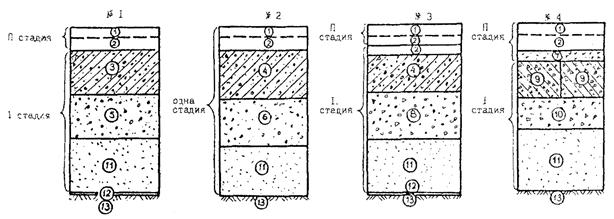
Рис. 1.1. Типовые конструкции магистральных районных (№ 1 и 2) и жилых (№ 2) улиц, внутриквартальных монолитных (№ 2, 3) и с применением железобетонных плит (№ 4) дорог:
1 - мелкозернистый асфальтобетон; 2 - крупнозернистый асфальтобетон плотный; 3 - цементобетон марки 300; 4 - цементобетон марки 200; 5 - тощий бетон М75; 6 - тощий бетон М100; 7 - мелкий щебень, высевки; 8 - известняковый щебень марки 400 - 600; 9 - железобетонные плиты; 10 - технологический слой из щебня; 11 - песок среднезернистый; 12 - синтетический нетканый материал дорнит, применяемый при неблагоприятных грунтовых гидрологических условиях; 13 - грунт земляного полотна.
Примечания: 1. Перед осуществлением работ II-ой стадии при наличии трещин и разрушений в конструкциях № 1 и 3 рекомендуется укладывать выравнивающую прослойку 7.
2. В конструкциях № 2 и 3 может быть применено бетонное покрытие вместо асфальтобетонного.
1.9. При проектировании и строительстве магистральных, жилых улиц и внутриквартальных дорог кроме требований и положений настоящей инструкции должны выполняться требования соответствующих ГОСТов, СНиПов и других нормативных документов, указанных в тексте и в списке документов в конце инструкции.
2.1. Дорожные одежды в районах массового жилищного строительства должны обладать прочностными и эксплуатационными характеристиками, обеспечивающими их нормальную работу в заданных режимах на 1-й и 2-й стадиях эксплуатации.
2.2. Принимаемые проектные решения должны обеспечивать прочность, выносливость и устойчивость дороги в целом и отдельных ее конструктивных слоев под воздействием автомобильных нагрузок и климатических факторов.
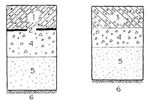
Рис. 1.2. Типовые конструкции дорог на территориях детских садов, школ, больниц, жилых зданий, устраиваемые в одну стадию:
1 - цементобетон М350 - 100; 2 - пергамин или полиэтиленовая пленка; 3 - плиты с бортами; 4 - технологический слой из щебня; 5 - песок среднезернистый; 6 - грунт земляного полотна.
Примечание. При неблагоприятных грунтово-гидрологических условиях по земляному полотну укладывается синтетический нетканый материал - дорнит.
2.3. Магистральные и жилые улицы, внутриквартальные дороги включают следующие конструктивные слои (рис. 1.1, 1.2): покрытие, упругую прослойку, основание, песчаный подстилающий слой, синтетический материал - дорнит (при неблагоприятных грунтовых условиях).
При использовании синтетических прослоек типа дорнит толщина песчаного слоя может быть уменьшена при соответствующем технико-экономическом обосновании.
2.4. Основание выполняется на 1-й стадии из цементобетона марки 200, если движение транспорта намечено по слою из крупнозернистого асфальтобетона, и марки 300, если движение намечено по цементобетону.
Конструктивный и технологический слой устраивают из малоцементного (тощего) бетона марок 75 - 100 или из смесей щебеночных, уплотняемых в соответствии с ТУ 400-24-150-86.
2.5. В основаниях из малоцементных (тощих) бетонных смесей марок 75 - 100 устраивают поперечные температурные швы в конце рабочей смены по типу ложных швов сжатия /14/.
2.6. В основаниях из пластичного бетона устраивают поперечные температурные швы по типу ложных швов сжатия через:
- 8 - 10 м для бетона М200;
- 5 - 6 м для бетона М300 /21/.
2.7. Покрытие улиц и дорог на 2-й стадии строительства устраивают из двух слоев асфальтобетона или слоя бетона М350, М400.
2.8. На 1-й стадии строительства дождеприемные решетки и крышки люков смотровых колодцев должны устанавливаться на отметку верха покрытия.
При устройстве покрытия на 2-й стадии крышки люков колодцев и дождеприемные решетки выводятся на проектные отметки установкой дополнительных колец или применением регулируемых оголовков.
2.9. Строительство дорог на территориях детских садов, школ, больниц, жилых зданий должно выполняться непосредственно перед сдачей объектов в эксплуатацию.
Покрытие следует выполнять из сборных железобетонных плит, объединенных с бортами, или монолитного цементобетона марки не менее 350, укладываемого по литьевой технологии с применением суперпластификаторов (рис. 1.2).
Температурные швы сжатия в монолитном покрытии устраиваются при ширине проезжей части 3,5 - 4 м через 6 м, при ширине проезжей части 5,5 - через 5 м.
2.10. Дороги, предназначенные для движения построечного транспорта, проектируют на автомобильную нагрузку Н-30 (таблица 2.1), дороги на территориях детских садов, школ, больниц и жилых зданий, устраиваемые в одну стадию, - на Н-10.
Нормативные параметры автомобильной нагрузки
|
Наименование основных показателей |
Единица измерения |
Нормативные документы для |
|
|
Н-30 |
Н-10 |
||
|
Масса нагруженного автомобиля |
т |
30 |
15 |
|
Статическая нагрузка на ось |
кН (т) |
120 (12) |
70 (7) |
|
Статическая нагрузка на колесо |
- » - |
60 (6) |
35 (3,5) |
|
Диаметр отпечатка колеса |
м |
0,36 |
0,32 |
2.11. Расчетная нагрузка на ось или колесо автомобиля определяется как произведение нормативной нагрузки (табл. 2.2) на коэффициенты перегрузки и динамики. Коэффициент перегрузки автомобильной нагрузки п1 = 1,4. Коэффициент динамики автомобильной нагрузки КД = 1,2.
Нормативные характеристики бетонов
|
Наименование материала |
Проектная марка (класс бетона) по прочности на сжатие |
Нормативная прочность на растяжение при изгибе 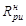 |
Модуль упругости Е, МПа |
Минимальные марки по морозостойкости |
|
Цементобетон |
М400 (В 30) |
5,0 |
40000 |
200 |
|
М350 (В 27,5) |
4,5 |
35000 |
200 |
|
|
М300 (В 25) |
4,0 |
29000 |
150 |
|
|
М200 (В 15) |
3,0 |
24000 |
150 |
|
|
Тощий (укатываемый) бетон |
М100 (В7,5) |
1,8 |
14000 |
100 |
|
М75 (В5) |
1,5 |
13000 |
50 |
При расчете нижнего слоя основания на непосредственное воздействие построечного транспорта принимают:
п1 = 1,1 и Кд = 1,05.
2.12. Расчетное температурное воздействие - суточные колебания температуры на поверхности открытого цементобетонного слоя Ао - принимают равным 17 °С.
2.13. Нормативные сопротивления
цементобетона и тощего бетона растяжению при изгибе 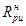
2.14. При и Е, отличающихся от приведенных в табл. 3, например при использовании в бетонных смесях химических добавок, допускается принимать другие их значения, согласованные в установленном порядке.
2.15. Расчетные сопротивления цементобетона определяют по формулам:
- при расчете на прочность Rр = Rн · Кs
- при расчете на выносливость Rр = Rн · Кs · Крп · Ку
где: Кs - коэффициент однородности материала;
Крп - коэффициент роста прочности материала во времени;
Ку - коэффициент усталости материала.
Коэффициент однородности материалов при расчете на 1-й и 2-й стадиях принимают равным - 0,7. При расчете слоя основания из тощего бетона на непосредственное воздействие ограниченного количества проходов построечного транспорта для материала нижнего слоя принимают Кs = 0,90. Коэффициент Крп принимают в зависимости от времени, прошедшего с момента укладки слоя (t) по табл. 2.3.
Рост прочности цементобетона во времени
|
28 сут. |
1 год |
3 года |
10 лет |
|
|
Крп |
1 |
1,25 |
1,30 |
1,40 |
Коэффициент усталости материала (относительный предел выносливости) Ку принимают по табл. 2.4.
2.16. При расчете конструктивных слоев дорожной одежды из цементобетона на температурные воздействия следует учитывать уменьшение (релаксацию) усилий вследствие ползучести материала и возникновения неупругих деформаций в растянутой зоне сечения.
Этот фактор учитывают умножением расчетных усилий (напряжений) на коэффициенты релаксации Кр и пластичности Кп, принимаемые по табл. 2.5.
2.17. Коэффициент линейных температурных деформаций следует принимать равным:
- для цементобетона на гранитном щебне 8·106 °С-1
- для цементобетона на известняковом щебне 6·106 °С-1.
Коэффициент усталости цементобетона
|
Наименование слоя дорожной одежды |
Коэффициент усталости |
|||||
|
первая стадия строительства |
вторая стадия или одностадийное строительство |
|||||
|
магистральные улицы |
жилые улицы |
постоянные внутриквартальные дороги |
магистральные улицы |
жилые улицы |
постоянные внутриквартальные дороги |
|
|
Цементобетонное покрытие марок 350 - 400 |
- |
- |
- |
0,57 |
0,60 |
0,65 |
|
Цементобетонное основание: |
||||||
|
марки 300 |
- |
0,70 |
0,75 |
- |
0,60 |
0,65 |
|
марки 200 |
- |
0,60 |
0,65 |
- |
0,70 |
0,75 |
|
Тощий (укатываемый) бетон марок 75 и 100 |
- |
0,65 |
0,70 |
0,52 |
0,55 |
0,60 |
Коэффициенты релаксации и пластичности цементобетона
|
Вид предельного состояния |
Коэффициент релаксации Кр |
Коэффициент пластичности Кп |
|
Прочность |
0,75 |
0,60 |
|
Выносливость: |
||
|
1 стадия |
0,85 |
0,75 |
|
2 стадия |
0,90 |
0,80 |
2.18. Коэффициент Пуассона m принимают равным:
- для цементобетона 0,20
- для грунта 0,30.
2.19. Характеристики материалов и грунтов, используемых при строительстве дорожных одежд, следует принимать по действующим нормативным документам: цементобетон (6, 15, 17, 20), асфальтобетон (3, 12, 18, 19), щебеночные смеси (4, 22, 23), грунты (12, 20, 22).
2.20. Методика расчета дорожных одежд жесткого типа при стадийном строительстве дана в приложении 1.
2.21. Блок-схема определения расчетных величин изгибающих моментов в плитах жестких покрытий от воздействия расчетной автомобильной нагрузки в сочетании с температурными напряжениями приведена в приложении 2.
3.1. Материалы и изделия, применяемые в конструктивных слоях дорожной одежды, должны удовлетворять требованиям соответствующих нормативных документов и настоящей инструкции.
3.2. Асфальтобетонные покрытия устраивают из асфальтобетонных смесей, отвечающих требованиям ГОСТ 9128-84 «Смеси асфальтобетонные, дорожные, аэродромные и асфальтобетон» (3).
3.3. Цементобетон, применяемый для устройства верхних слоев основания и покрытия, должен отвечать требованиям ВСН 6-67 и ВСН 64-82.
3.4. Тощий (укатываемый) бетон, используемый в основании дорожной одежды, должен отвечать требованиям ВСН 16-95.
3.5. Щебеночные смеси, используемые в основании дорожной одежды, должны отвечать требованиям ТУ 400-24-150-86.
3.6. Песок, применяемый для устройства подстилающего слоя, должен соответствовать требованиям ГОСТ 8736-90.
3.7. Работы по сооружению земляного полотна производят после окончания работ по вертикальной планировке, устройству дренажей, прокладке новых и перекладке старых подземных инженерных сетей, засыпке траншей и разрытии с послойным уплотнением.
3.8. Работы по устройству земляного полотна целесообразно производить экскаваторами с ковшом емкостью от 0,25 м3 до 1,0 м3 (ЭО-2621В-3; ЭО-2626; ЭО-3123; ЭО-3323А; ЭО-4225; ЭО-5124), бульдозерами мощностью 80 250 л. с. (ДЗ-42; ДЗ-162-1; ДЗ-190), автогрейдерами средними и тяжелого типа (ДЗ-180А; ДЗ-122Б;ДЗ-98В-1).
3.9. Отсыпку каждого слоя насыпи следует начинать с крайних боковых полос с последующим приближением к оси дороги. Толщина слоя отсыпки должна соответствовать заданной толщине технологического слоя с учетом коэффициента запаса на уплотнения, принимаемого в зависимости от типа грунта при влажности грунта близкой к оптимальной (таблица 3.1).
Характеристика грунтов
|
Наименование грунта |
Оптимальная влажность (массовая доля), % |
Коэффициент запаса на уплотнение |
|
Песок крупный, и гравелистый |
6 |
1,3 |
|
Песок средней крупности |
8 |
1,3 |
|
Песок мелкий и пылеватый |
10 |
1,4 |
|
Супесь легкая |
9 - 11 |
1,25 |
|
Супесь пылеватая |
9 - 13 |
1,3 |
|
Суглинок легкий |
14 - 16 |
1,2 |
|
Суглинок тяжелый |
16 - 18 |
1,2 |
|
Глина пылеватая |
18 - 20 |
1,15 |
3.10. Каждый слой следует разравнивать, соблюдая проектный продольный и поперечный уклоны. Отсыпанный слой следует выровнять автогрейдером под двухскатный или односкатный поперечный профиль. К концу смены должен быть полностью отсыпан, выровнен и уплотнен слой грунта по всему поперечному сечению земляного полотна. Движение транспортных средств, отсыпающих на насыпи очередной слой, необходимо регулировать по всей его ширине.
3.11. Использование в одном слое насыпи разных видов грунтов не допускается, за исключением случаев, когда такое решение специально предусмотрено проектом.
3.12. Грунт земляного полотна должен быть уплотнен до требуемой плотности по методу стандартного уплотнения (с коэффициентом уплотнения Куп = 0,98 - 1,0).
3.13. Слой рыхлого связного грунта следует уплотнять в два приема. Вначале для избежания сдвигов и образования волн грунта следует производить прикатку легким катком массой 6 - 12 т, а затем более тяжелыми катками массой 25 т и более.
3.14. Катки для уплотнения грунта выбирают в зависимости от вида грунта и толщины слоя отсыпки в соответствии с табл. 3.2.
Машины для уплотнения грунтов
|
Марка машины |
Тип машины |
Масса, т |
Глубина уплотнения (в плотном теле), м |
|
|
связный грунт |
несвязный грунт |
|||
|
ДУ-65 |
Самоходный пневмоколесный на спецшасси, статический |
10 - 12 |
0,20 |
0,25 |
|
ДУ-64 |
Самоходный комбинированного действия с вибрационным вальцом |
8,5 - 9,5 |
0,30 |
0,50 |
|
ДУ-58А |
16 |
0,40 |
0,60 |
|
|
ДУ-71 |
17 - 25 |
0,50 |
0,60 |
|
|
ДУ-70 |
Прицепной к трактору Т-150 К, вибрационный |
6,5 - 7 |
0,25 |
0,40 |
|
КО-2 |
12 |
0,30 |
0,50 |
|
3.15. Уплотнение грунта прицепными катками выполняется круговыми проходами по рабочей захватке. Укатка производится от краев насыпи к ее середине с перекрытием смежных полос уплотнения по 0,15 - 0,25 м. Для предотвращения обрушения откосов кромка вальца не должна быть ближе 0,3 м от бровки отсыпаемого слоя. Укатку самоходными катками следует проводить по челночной схеме. На рис. 3.1 представлена схема уплотнения земляного полотна самоходными катками.
3.16. На участках с нулевыми рабочими отметками и в выемках естественный грунт из корыта дорожной одежды должен удаляться бульдозерами непосредственно перед отсыпкой песчаного слоя, а грунт уплотняют до требуемой плотности (Куп = 0,98 - 1,0) с обеспечением водоотвода.
3.17. Насыпи, как правило, должны возводиться из талого песчаного или супесчаного грунта. С целью более полного использования местного грунта допускается отсыпка насыпи из смеси талого песчаного и мерзлого местного грунтов с обязательным уплотнением до наступления смерзания грунта. Отсыпка верхних слоев насыпей высотой 0,8 - 1,5 м производится только из талого грунта при влажности, близкой к относительной.
3.18. Глинистые (водонепроницаемые) грунты могут применяться только в непереувлажненном состоянии. Пылеватые грунты допускается применять только в нижней части насыпи. Верхняя часть насыпи в этом случае не менее 0,5 м отсыпается из песчаных или супесчаных грунтов.
3.19. При устройстве дорожного корыта его глубина должна соответствовать проекту с допуском ± 3 см. Ширина корыта с учетом установки бортовых камней должна быть больше ширины покрытия на 0,5 м.
3.20. Поверхность земляного полотна планируют так, чтобы величина просвета при прикладывании 3-метровой рейки не превышала 1 см.
3.21. Возведение насыпей в зимнее время допускается при наличии необходимого количества уплотняющих средств, обеспечивающих быстрое уплотнение отсыпанного грунта до требуемого значения.
3.22. Содержание мерзлого грунта в насыпи допускается до 20 % с размером комьев не более 15 см при уплотнении катками весом 25 - 40 т на пневматических шинах и с размером комьев до 20 см при уплотнении трамбующими машинами, катками с падающими грузами.
3.23. Длина участков отсыпаемых насыпей и уплотняющие средства должны быть выбраны так, чтобы окончательное уплотнение грунта в насыпи заканчивалось не позднее 3 часов при t воздуха до - 10 °С и не позднее 2 часов до - 20 °С после выемки грунта в резерве или грунтовом карьере (таблица 3.3).
Время уплотнения грунта в насыпи
|
Температура наружного воздуха в град. |
- 5 |
- 10 |
- 20 |
-30 |
|
Время начала смерзания грунта в мин |
90 - 120 |
60 - 90 |
40 - 60 |
20 - 30 |
3.24. Работы по возведению земляного полотна должны непрерывно контролироваться лабораторией, для чего непосредственно на месте работ организуются специальные контрольные посты.
3.25. В задачу контрольных постов входит следующее:
а) непрерывный контроль за влажностью и плотностью грунтов, укладываемых в насыпь;
б) определение режима работ уплотняющих машин (толщина уплотняемого слоя и число проходов);
в) осуществление контроля за качеством уплотнения грунтов путем наблюдения за точным выполнением определенного режима работы машин и испытания плотности не менее трех образцов грунта на каждые 200 пог. м насыпи;
г) количество мерзлого грунта не должно превышать пределов, указанных в п. 3.22, контрольные пробы отбирают до уплотнения грунта на каждые 200 - 300 м3.
3.26. Взятие проб для определения объемного веса мерзлого грунта следует производить путем вырубки монолитов объемом не менее 300 см3, а в случае грунтовой смеси или талого грунта целесообразно применять стальные цилиндры объемом около 2 - 3 л.
3.27. В конце зимы, когда уже намечаются оттепели, земляное полотно следует тщательно очистить от снега и льда. Во время таяния снега необходимо обеспечить непрерывный и беспрепятственный сток воды.
3.28. Отвод воды, поступающей к подстилающему слою, производится продольными и поперечными дренами, выполненными из трубофильтров.
Работы по устройству трубчатого дренажа выполняются непосредственно перед распределением подстилающего песчаного слоя.
3.29. Траншеи под трубчатый дренаж следует отрывать до наступления заморозков при помощи автогрейдера ДЗ-180А с навесным оборудованием или при помощи экскаватора ЭО-2621В-3 с трапецеидальным ковшом. Укладка труб в траншею производится вручную или при помощи автокранов.
3.30. Технологический процесс устройства дренажей мелкого заложения включает: рытье ровика; устройство в нем подушки под трубы; укладку труб с фильтрами; сопряжение трубчатых дрен с водоприемниками; заполнение ровика песком и его уплотнение. Трубы с раструбами или трубофильтры обращают против уклона раструбами и пазами. Особое внимание должно уделяться уплотнению дна ровика.
3.31. В процессе устройства дренажей мелкого заложения проверяют: уклон подушки; качество фильтров обсыпок; плотность соединения звеньев труб в стыках, в том числе трубофильтров с полимерными муфтами; гранулометрический состав и коэффициент фильтрации; толщину слоя песка; влажность и степень увлажнения песка.
3.32. Для устройства дренажей эффективно применение геотекстиля. Геотекстиль - дорнит, поставляют, как правило, в рулонах массой до 80 кг с длиной полотна в рулоне не менее 40 м и шириной не менее 1,5 м. Дорнит может применяться как противозаплывающий материал в дренаже мелкого заложения, так и в совмещенной конструкции дренирующего слоя и дренажа мелкого заложения.
3.33. Дождеприемные и смотровые колодцы, попадающие в зону строительства дорог, должны устраиваться так, чтобы верх дождеприемных решеток был на 2 см ниже, а крышки люков находились на отметке верха покрытия. Рекомендуется применять регулируемые оголовки смотровых колодцев, опирающихся на упругое основание.
Оголовки выполняются из сборного железобетона и состоят из опорной плиты и поворотного регулировочного кольца (рис. 3.2). Конструкция позволяет обеспечить совместную работу дорожной одежды с оголовком смотрового колодца, что повышает долговечность сопряжении и ровность проезжей части. Данная конструкция позволяет получить точные отметки крышки люка благодаря телескопическому соединению оголовка и горловины колодца и возможности его регулирования по высоте за счет поворотного регулировочного кольца.
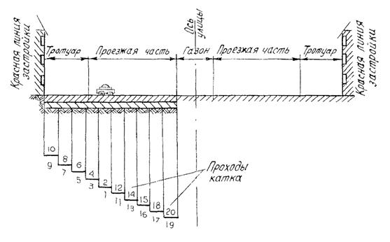
Рис. 3.1. Схема уплотнения земляного полотна самоходными катками.
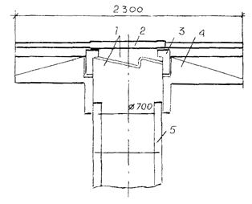
Рис. 3.2. Конструкция регулируемого оголовка смотрового колодца:
1 - регулировочное кольцо; 2 - крышка люка; 3 - поморочное кольцо; 4 - опорная плита; 5 - колодец.
3.34. Производство работ по устройству песчаного подстилающего слоя должно производиться в соответствии с требованиями СНиП 3.06.03-85. Автомобильные дороги.
3.35. Песок доставляют на объект автомобилями-самосвалами. Разравнивание песка производят по способу «от себя» бульдозерами или автогрейдерами, соблюдая проектный уклон. Толщина слоя песка должна соответствовать заданной толщине слоя с учетом запаса на уплотнение. Отклонение по толщине слоя допускается не более 1 см.
3.36. Катки для уплотнения песка выбирают в зависимости от вида песка и толщины слоя в соответствии с табл. 3.2. Уплотнение следует производить до требуемой плотности (Куп = 0,98 - 1,0) при влажности близкой к оптимальной (табл. 3.1). Если влажность песка меньше оптимальной, его следует увлажнять поливомоечной машиной.
3.37. Пески или песчано-гравийная смесь, применяемые для подстилающего слоя, должны иметь коэффициент фильтрации не менее 3 м/сут., содержание мелкозема не выше 7 %, а пылеватых и глинистых частиц не более 5 % по массе.
3.38. Коэффициент уплотнения подстилающего слоя должен быть не менее 0,98, а наибольший просвет под 3-метровой рейкой - 1 см.
3.39. Для предотвращения смерзания песка в зимнее время рекомендуется его пропитка 2-процентным раствором хлористого кальция (CaCl2). Необходимое количество CaCl2 на 1 м2 поверхности слоя приведено в табл. 3.4.
|
Содержание безводного CaСl2 в 1 литре раствора, % |
Глубина пропитки, см |
Количество CaСl2 , кг/м2 |
|
2 |
15 |
5 |
|
2 |
30 |
10 |
А. Из щебеночных уплотняемых смесей.
3.40. Основания из щебня устраивают по принципу плотных смесей оптимального зернового состава. Марка щебня по дробимости должна быть не менее 40 МПа.
3.41. Щебеночные смеси оптимальной влажности (4 - 6 % по массе марки по дробимости в цилиндре не ниже 400) доставляют автомобилями-самосвалами и выгружают в приемный бункер щебнеукладчика или на подготовленное земляное полотно. Готовая смесь укладывается в дорогу позже 3-х часов после доставки на место работ.
3.42. Укладку щебеночных смесей следует осуществлять щебнеукладчиками, универсальными укладчиками с автоматическими следящими системами.
Допускается производить распределение щебеночных смесей автогрейдерами слоями с учетом коэффициента запаса на уплотнение.
3.43. Основание из щебеночных смесей уплотняют самоходными катками не менее чем за 10 проходов. Тип катка выбирают в зависимости от толщины уплотняемого слоя согласно таблице 3.5.
Б. Из тощих (укатываемых) бетонных смесей.
3.44. Для устройства оснований дорожных одежд следует применять тощий бетон марок: по прочности - М75, 100, по морозостойкости - М50 - 100 (Приложение 3).
3.45. Производство работ по строительству оснований из тощих бетонных смесей должно осуществляться согласно действующим нормам с учетом изложенных ниже положений.
Машины для уплотнения щебеночных смесей
|
Марка машины |
Тип машины |
Масса, т |
Толщина уплотняемого слоя (в плотном теле), м |
|
ДУ-54М |
Самоходный, двухосный, двухвальцовый, вибрационный |
1,5 - 2,5 |
0,10 |
|
ДУ-73 |
5,0 - 5.5 |
0,15 |
|
|
ДУ-47Б |
6 |
0,15 |
|
|
ДУ-63 |
10 |
0,20 |
|
|
ДУ-64 |
Самоходный комбинированного действия с вибрационным вальцом |
8,5 - 9,5 |
0,25 |
|
ДУ-58А |
16 |
0,30 |
|
|
ДУ-71 |
17 - 25 |
0,30 - 0,50 |
|
|
ДУ-65 |
Самоходный пневмоколесный на спецшасси, статический |
10 - 12 |
0,15 |
|
ДУ-63-1 |
Самоходный двухосный, двухвальцовый, статический |
10 |
0,10 |
|
ДУ-47Б-1 |
6 |
0,10 |
3.46. Основания следует устраивать в сухую погоду при температуре воздуха не ниже 0 °С. При отрицательных температурах разрешается укладывать смеси специального состава с противоморозными добавками.
3.47. Бетонная смесь должна поставляться на строительный объект в автобетоносмесителях или в автосамосвалах. Доставка смеси должна осуществляться по часовому графику, разработанному с учетом производительности укладочных машин.
3.48. Время транспортирования смеси тощего бетона не должно превышать 90 минут. Время после выпуска смеси до ее окончательного уплотнения в основании не должно превышать 150 мин.
При транспортировании смеси в сухую погоду необходимо предохранять ее от потери влаги, в сырую - от переувлажнения.
3.49. Укладка смеси должна осуществляться бетоноукладчиками или универсальными укладчиками с автоматическими следящими системами и поверхностными уплотняющими рабочими органами.
На участках площадью менее 1000 м2, где невозможно применение указанных машин, укладка смеси может производиться экскаваторами ЭО-2621 с навесным оборудованием или автогрейдером слоями с учетом коэффициента запаса на уплотнение.
3.50. Укладка бетонной смеси ведется от края к оси проезда. Движение укладочных машин в продольном направлении должно происходить навстречу уклону, если он больше чем 30 % .
3.51. Укладку смеси при ширине дороги до 9 м следует вести отдельными захватками длиной 40 - 50 м с таким расчетом, чтобы разрыв во времени укладки смежных полос не превышал 1 часа во избежание обезвоживания боковой кромки ранее уложенной полосы.
3.52. Дефекты поверхности основания (впадины и разрывы) из свежеуложенной смеси должны устраняться по ходу работы подсыпкой смеси.
3.53. Уплотнение смесей следует производить самоходными катками. Укатка производится из расчета 75 - 100 м3 смеси на один каток.
3.54. Укатка должна начинаться от края к оси проезда при двухскатном профиле; при односкатном - навстречу поперечному уклону. Перекрытие следа должно составлять 15 - 25 см. Уплотнение считается достаточным, когда при проходе тяжелого катка на поверхности не остается следа.
3.55. В конце рабочей смены, в случае отсутствия температурного шва должен устраиваться рабочий шов в виде упорной доски толщиной 5 см на всю ширину и высоту укладываемой полосы. Вдоль рабочих швов бетонная смесь должна быть дополнительно уплотнена поверхностными вибраторами с подсыпкой смеси вручную на полосе шириной 25 - 30 см. Перед возобновлением укладки смеси доска удаляется и торец бетона обрабатывается цементно-песчаным раствором состава 1 : 1.
3.56. Температурные швы устраивают после прохода бетоноукладочной машины по типу ложных швов закладной доски толщиной 2 - 3 см в свежеуложенный бетон в местах, предусмотренных проектом.
В. Из пластичных бетонных смесей.
3.57. Устройство основания из пластичного бетона рекомендуется производить сразу после уплотнения тощего бетона. В отдельных случаях разрешается укладка бетонной смеси спустя 3 часа после уплотнения тощего бетона.
3.58. При невозможности соблюдения требований п. 3.57 укладка основания из пластичного бетона производится после набора тощим бетоном прочности не менее 70 % марочной, но не ранее 7 суток с начала строительства основания.
3.59. Если разрыв во времени между укладкой слоев не превышает 3-х часов, уход за тощим бетоном не производят, а если превышает, то уход за слоем из тощего бетона следует производить при помощи битумной эмульсии.
Расход битумной эмульсии при температуре воздуха во время укладки до + 25 °С составляет 0,4 кг/м2, свыше + 25 °С - 0,7 кг/м2.
3.60. Основание на первой стадии строительства устраивают из бетонных смесей марок М200 и 300 с морозостойкостью 150 и 200.
3.61. Основание из бетона марки 300 в 1-й стадии используется в качестве покрытия.
3.62. Производство работ по строительству основания из цементобетонных пластичных смесей должно осуществляться согласно действующим нормам с учетом изложенных ниже положений.
3.63. Приготовление бетонной смеси должно обеспечивать требуемый объем вовлеченного воздуха с учетом продолжительности ее транспортирования от бетонного завода к месту укладки.
Продолжительность транспортирования бетонной смеси в автосамосвалах не должна превышать 60 мин при температуре воздуха от 20 до 30 °С и 90 мин - при температуре воздуха ниже 20 °С. В случае невозможности выполнения этих требований транспортировку смеси следует осуществлять только автобетоносмесителями.
В процессе транспортирования бетонной смеси автосамосвалами следует защищать ее от воздействия атмосферных осадков и испарения влаги.
3.64. Бетонная смесь должна поставляться на объект по часовому графику в количестве, обеспечивающем бесперебойную работу укладочных машин.
3.65. Строительство оснований из пластичных бетонных смесей следует производить бетоноукладчиками с автоматическими следящими системами.
3.66. Укладку бетонной смеси при максимальной температуре (суточной) воздуха свыше 30 °С, перепаде температуры воздуха за сутки более 15 °С следует, как правило, производить в вечернее время и в ночные часы.
3.67. При установившейся среднесуточной температуре наружного воздуха ниже 5 °С и минимальной суточной температуре воздуха ниже 0 °С укладку смеси следует производить с применением противоморозных добавок.
3.68. Строительство бетонного основания может осуществляться по двум вариантам:
а) с боковой подачей бетонной смеси без заезда транспорта на нижний слой. В этом случае устройство основания можно производить в любое время после укатки тощего бетона;
б) с заездом построечного транспорта на слой из тощего бетона; при организации работ по этому варианту устройство бетонного основания можно начинать не ранее чем через 7 суток после укладки слоя из тощего бетона и набора им прочности не менее 70 % от проектной.
3.69. Если перерыв между строительством слоев превышает 1 сутки, то перед укладкой бетонной смеси слой из тощего бетона необходимо очистить от грязи и промыть.
3.70. По слою тощего (укатываемого) бетона допускается ограниченное движение транспорта, необходимое для строительства бетонного основания.
3.71. Укладку и уплотнение бетонной смеси следует производить непрерывно, избегая остановок бетоноукладчика.
3.72. Незначительные неровности и мелкие дефекты поверхности после прохода бетоноукладчика исправляют с помощью ручных гладилок.
Шероховатость бетонного покрытия М300 достигается обработкой поверхности свежеуложенного бетона мешковиной и щетками.
3.73. Нарезку температурных швов сжатия следует производить в затвердевшем бетоне. При устройстве на 1-й стадии нижнего слоя асфальтобетонного покрытия допускается нарезка швов и в свежеуложенном бетоне.
3.74. Герметизацию температурных швов производят битумно-резиновой мастикой или эластичными прокладками.
3.75. Ремонт цементобетонных оснований и покрытий осуществляют бетонной смесью марки не менее 400 с добавкам, улучшающими строительно-технические свойства бетона и его сцепление с основанием (битумная эмульсия, ПАВ).
А. Из литых бетонных смесей.
3.76. Строительство оснований из литых бетонных смесей марки 200 и покрытий марки 300 (на 1-й стадии), а также марок 350 - 400 (Приложение 3) производится в соответствии с «Инструкцией по технологии строительства монолитных городских дорог из бетонных смесей с суперпластификаторами» (ВСН 64-82).
3.77. Технология строительства бетонных оснований и покрытий из литых смесей отличается от технологии строительства из пластичных смесей необходимостью предварительной установки бортовых камней или устройства опалубки и отсутствием распределяющих и уплотняющих механизмов.
3.78. Транспортирование литых бетонных смесей следует производить исключительно в автобетоносмесителях, оборудованных специальными дозаторами добавок. Отдозированные на заводе составляющие бетонной смеси загружают в автобетоносмесители и перемешивают во время движения. При этом подвижность бетонной смеси непосредственно перед введением в нее суперпластификатора должна находиться в пределах 2 - 5 см. Суперпластификатор вводится в бетонную смесь на строительном объекте или в дороге. Затем смесь перемешивают в течение 3 - 4 мин и выливают в опалубку.
3.79. На каждую ездку автобетоносмесителя завод должен выдавать паспорт, в котором указывается назначение смеси, объем, подвижность при выгрузке, общее количество воды на замес и количество суперпластификатора, необходимое для подачи в смеситель на объекте с учетом влажности заполнителей.
3.80. Выгрузка бетонной смеси из автобетоносмесителя в опалубку, при имеющейся возможности подъезда непосредственно к строящейся дороге, производится равномерно небольшими порциями передвижкой поворотного желоба автобетоносмесителя по всей бетонируемой поверхности. Во избежание расслоения бетонной смеси угол наклона должен быть в пределах 45 - 60°.
3.81. При отсутствии возможности подъезда автобетоносмесителя непосредственно к строящейся дороге укладку бетонной смеси в труднодоступную конструкцию дорог можно производить автобетоносмесителями совместно с бетононасосами типа «Штеттер», «Вибау» и др.
3.82. После распределения смеси производят ее профилирование с помощью металлического или деревянного шаблона, передвигаемого по опалубке. Обнаруженные после профилировки дефекты поверхности бетона должны быть устранены с помощью инвентарных инструментов (гладилки, кельмы, резиновой ленты).
3.83. Уход за свежеуложенным бетоном должен быть организован через 30 - 60 мин после окончания его отделки. На поверхность бетона наносят в количестве 0,4 - 0,7 кг/м2 (в зависимости от температуры воздуха) в два приема пленкообразующие материалы: битумную эмульсию или лак этиноль. Второй слой наносят через 40 - 60 мин. На рис. 3.3 представлена технологическая схема устройства покрытия из литых бетонных смесей на основании из тощего укатываемого бетона.
3.84. Укладку асфальтобетонного покрытия на основание из литого бетона разрешается осуществлять не ранее чем через 7 суток. Эксплуатация покрытия из литого бетона разрешается через 28 суток.
3.85. Устройство бетонных оснований при минимальной температуре воздуха - 15 °С и устройство покрытий из литых смесей при температуре - 10 °С не рекомендуется.
Б. Из сборных плит.
3.86. Железобетонные плиты для сборных покрытий следует изготовлять из тяжелого бетона средней плотности более 2200 до 2500 кг/м3 включительно, классов по прочности на сжатие и марок по прочности на растяжение при изгибе, указанных в ГОСТ 21923.1-84 и ГОСТ 21924.2-84. Марки бетона по морозостойкости и водонепроницаемости принимаются для плит, предназначенных для постоянных дорог - Мрз150 и W4, а для плит временных дорог - Мрз75 и W2.
3.87. Плиты должны иметь правильную геометрическую форму, ровную, чистую, шероховатую рабочую поверхность, обеспечивающую величину коэффициента сцепления не менее 0,5.
3.88. Транспортировка плит на объект строительства осуществляется бортовыми автомобилями и автопоездами соответствующей грузоподъемности.
3.89. Укладка плит производится автомобильными и пневмоколесными кранами с готового покрытия способом «от себя». На рис. 3.4 представлена технологическая схема укладки плит автомобильным краном «с колес».
Укладку плит производят по неуплотненному технологическому слою из песка или цементопесчаной смеси толщиной 3 - 5 см. При двухскатном профиле укладку ведут поперечными рядами от края до края навстречу уклону.
3.90. При применении плит беспетлевой конструкции монтаж производят с помощью одноветвевого стропа-чалки и специального устройства.
Окончательная посадка плит на основание производится прикаткой катками на пневматических шинах до прекращения осадки плит.
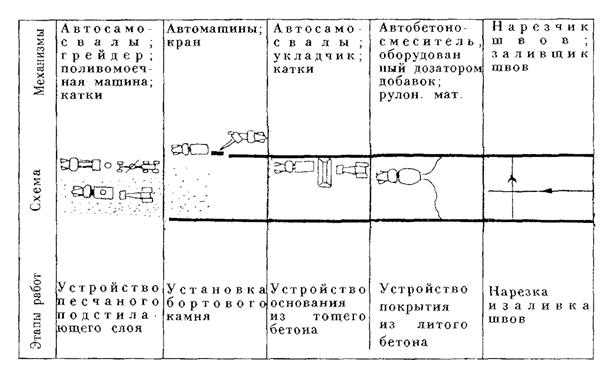
Рис. 3.3. Технологическая схема устройства покрытия из литых бетонных смесей на основании из тощего укатываемого бетона.
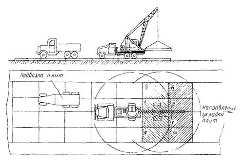
Рис. 3.4. Технологическая схема укладки плит автомобильным краном «с колес».
3.91. Сварку соединений в стыках плит и заполнение швов герметизирующим составом следует выполнять сразу же после окончательной посадки плит в покрытие.
Заполнение швов сухой цементопесчаной смесью и на 1/3 от верха покрытия герметизирующим материалом (изол, битумная мастика и др.) следует производить, как правило, с помощью специального оборудования. Ширина швов должна составлять 6 - 8 мм.
3.92. При строительстве покрытий из плит с бортами особое внимание следует обращать на точное соблюдение продольных и поперечных уклонов, ровность покрытия. Уступы в швах смежных плит не должны превышать 2 мм.
3.93. Временные дороги из сборных плит, уложенные по трассам постоянных дорог, на последней стадии их оборачиваемости после исправления продольного и поперечного профилей можно использовать на 2-й стадии строительства как основание постоянных внутриквартальных дорог.
3.94. Ремонт сборных оснований производят заменой отдельных плит и выравниванием поверхности, установкой их на проектные отметки.
4.1. При строительстве магистральных районных и жилых улиц, а также внутриквартальных дорог применяют бетонные и железобетонные бортовые камни, изготовляемые в соответствии с ГОСТ 6665-91.
4.2. Основные размеры бетонных и железобетонных камней, наиболее часто применяемых, представлены в табл. 4.1.
Размеры бетонных и железобетонных бортовых камней
|
Марка |
Размеры в мм |
||
|
длина |
высота |
ширина |
|
|
БР 100.30.15 |
1000 |
300 |
150 |
|
БР 300.30.15 |
3000 |
300 |
150 |
|
БР 600.30.15 |
6000 |
300 |
150 |
|
БР 100.30.18 |
1000 |
300 |
180 |
|
БР 300.30.18 |
3000 |
300 |
180 |
|
БР 600.30.18 |
6000 |
300 |
180 |
|
БР 300.45.18 |
3000 |
450 |
180 |
|
БР 600.60.20 |
6000 |
600 |
200 |
|
БР 100.20.8 |
1000 |
200 |
80 |
|
БУ 300.30.32 |
3000 |
300 |
320 |
4.3. Бортовые камни устанавливают: при одностадийном строительстве - поело устройства песчаного подстилающего слоя; при двухстадийном строительстве - перед началом работ по осуществлению 2-й стадии.
4.4. Бортовые камни доставляют на объект в специальных контейнерах (поддонах). Разгрузку и установку камней производят (гидрокраном на тракторе ДТ-20, Т-40 или Э-152 со специальным захватом), автокраном.
4.5. Однометровые камни устанавливают при помощи машин или вручную с применением клещевых или П-образных приспособлений.
4.6. Однометровые камни всех марок устанавливают на бетонное основание толщиной 10 см, уложенное на выровненный и уплотненный песчаный подстилающий слой. С двух сторон установленного бортового камня устраивают бетонную обойму высотой 10 см в деревянной или металлической опалубке. Установку бортовых камней производят по шнуру, натянутому между специальными металлическими штырями на высоте, соответствующей отметке верхней кромки камней.
4.7. Схема установки однометровых бортовых камней при помощи клещевого и П-образного приспособления представлена на рис. 4.1.
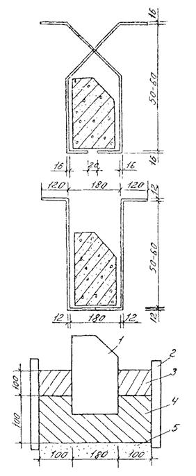
Рис. 4.1. Схема установки однометровых бортовых камней:
1 - бортовой камень; 2 - опалубка; 3 - участок бетонирования; 4 - бетонная подготовка; 5 - песчаный подстилающий слой.
4.8. Длинномерные бортовые камни длиной 3 и 6 м, устанавливают непосредственно на песчаное основание или основание дорожной одежды, предусмотренное проектом, под стыками камней укладывают бетонные подкладки размером 40×20×10 см. Установку камней производят автокранами грузоподъемностью 3 т или автопогрузчиками.
4.9. Ширина шва между бортовыми камнями не должна превышать 5 мм. Заполнение швов производят цементным раствором состава 1 : 4, после чего расшивают раствором состава 1 : 2.
5.1. Строительство асфальтобетонных покрытий производят при температуре весной и летом не ниже 5 °С, осенью - не ниже 10 °С.
За 2 - 4 часа до укладки смеси следует произвести обработку поверхности старого покрытия битумной эмульсией с расходом 0,3 - 0,4 кг/м2 (за исключением случая, указанного в п. 5.4).
5.2. Если в результате эксплуатации на 1-й стадии дорожная одежда имеет повреждения, то перед устройством покрытия необходимо устранить имеющиеся дефекты.
Ремонт асфальтобетонного покрытия производят горячей асфальтобетонной смесью с очисткой мест разрушений и предварительной обмазкой их разогретым битумом.
5.3. Нижний слой трехслойного асфальтобетонного покрытия (рис. 1.1, № 3) укладывается на 1-й стадии на бетонное основание марки М200 в соответствии с действующими нормативными документами.
5.4. На 2-й стадии строительства, непосредственно перед укладкой асфальтобетонного покрытия, на имеющее трещины бетонное основание (монолитное или сборное) следует уложить, для предотвращения распространения трещин в покрытие, слой толщиной 3 - 5 см из мелкозернистых материалов (высевки, мелкий щебень, крупнозернистый песок (рис. 1.1, № 4).
5.5. Транспортирование асфальтобетонной смеси к месту укладки должно быть ритмичным и производиться в автомобилях-самосвалах большой грузоподъемности.
5.6. Укладку асфальтобетонной смеси следует производить асфальтоукладчиками предпочтительно с автоматическими следящими системами. Во время распределения асфальтобетонной смеси ее температура должна быть не ниже 120 °С, а при применении смесей с ПАВ - не ниже 100 °С.
5.7. Толщину укладываемого слоя в неуплотненном состоянии следует принимать с учетом коэффициента уплотнения равным 1,20 - 1,30.
Ширину полосы укладки целесообразно назначать с учетом использования уширителей асфальтоукладчика, равной (при однополосной ширине) или кратной ширине проезжей части дороги.
5.8. При одностадийном устройстве двухслойного покрытия оба слоя должны быть уложены в течение одной смены.
5.9. Устройство нижнего слоя покрытия не должно опережать устройство верхнего слоя более чем на длину захватки, которая принимается с таким расчетом, чтобы температура нижнего слоя к началу устройства верхнего слоя была не ниже 50 °С.
5.10. Уплотнение асфальтобетонной смеси следует начинать немедленно после распределения смеси при максимально высокой температуре, исключающей образование деформаций в процессе укатки.
5.11. В зависимости от типа и вида катков и степени предварительного уплотнения смеси рабочими органами асфальтоукладчика надлежит производить: предварительное уплотнение катком массой 6 - 8 т с гладкими вальцами (до 6 проходов по одному следу), затем катком на пневматических шинах (8 - 10 проходов), окончательную укатку катком массой 10 - 18 т (4 - 6 проходов).
5.12. При двухскатном профиле катки должны двигаться по уплотняемому покрытию от краев к середине, а затем от середины к краям, перекрывая каждый след на 20 - 30 см. При устройстве покрытий односкатного профиля уплотнение следует начинать с низовой стороны, а на участках улиц и дорог с продольным уклоном более 30 %, укатку следует производить снизу вверх.
5.13. На рис. 5.1 представлена технологическая схема устройства асфальтобетонного покрытия по основанию из щебеночных уплотняемых смесей.
5.14. На рис. 5.2 представлена технологическая схема устройства асфальтобетонного покрытия по основанию из тощего укатываемого бетона.
6.1. Конструкции тротуаров следует принимать по альбому СК 6101-85. Конструкции дорожных одежд для г. Москвы. Строительство тротуаров производят с учетом действующих норм.
6.2. Требования к земляному полотну и песчаному подстилающему слою тротуаров аналогичны требованиям, предъявляемым полотну и подстилающему слою улиц и дорог (раздел 3).
6.3. Работы по устройству земляного полотна и песчаного подстилающего слоя тротуаров должны производиться одновременно с устройством внутриквартальных дорог.
6.4. Траншеи подземных сетей, расположенных под тротуарами, следует засыпать песком с коэффициентом фильтрации не менее 3 м/сутки.
6.5. Коэффициент уплотнения песка в траншеях и в подстилающем слое должен быть не менее 0,98.
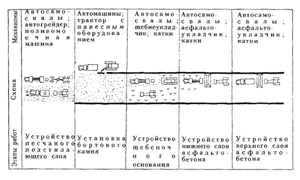
Рис. 5.1. Технологическая схема устройства асфальтобетонного покрытия по основанию из щебеночных уплотняемых смесей.
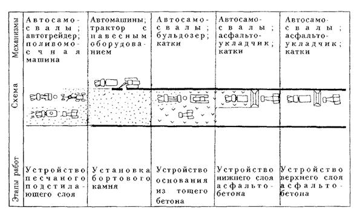
Рис. 5.2. Технологическая схема устройства асфальтобетонного покрытия по основанию из тощего (укатываемого) бетона.
6.6. Требования к основаниям тротуаров из щебеночных смесей, из тощих бетонных смесей марки 75 и 100, пластичных и литых бетонных смесей аналогичны требованиям, предъявляемым к основаниям улиц и дорог.
6.7. Тощие и пластичные бетонные смеси для устройства оснований и покрытий тротуаров распределяются экскаватором ЭО-2621 с навесным оборудованием или бульдозером на базе трактора «Беларусь».
6.8. Литые бетонные смеси для устройства оснований и покрытий тротуаров должны выгружаться из автобетоносмесителей исключительно в опалубку.
6.9. Уход за свежеуложенными смесями осуществляется нанесением битумной эмульсии из расчета 0,7 кг/м2.
6.10. Асфальтобетонные смеси для устройства асфальтобетонных покрытий укладываются тротуарными асфальтоукладчиками на колесном шасси (ДС-63) или асфальтоукладчиками на базе автопогрузчика.
6.11. Покрытие тротуаров, садово-парковых дорожек и площадок осуществляют и из сборных квадратных (К), прямоугольных (П), шестиугольных (Ш), фигурных бетонных плит и элементов мощения (Ф) и элементов декоративных дорожек (ЭДД). Виды, марки и размеры тротуарных плит согласно ГОСТ 17608-91 представлены в табл. 6.1. Из таблицы 6.1 видно, что толщина плиты покрытия зависит от вида основания.
6.12. Плиты доставляют на объект автотранспортом в специальных контейнерах.
Примечание. По этому же ГОСТу промышленность изготавливает фигурные плиты и элементы мощения - 1(Ф) и элементы декоративные дорожные - (ЭДД).
Виды, марки и размеры тротуарных плит
|
Тип плиты, марка плиты |
Размеры плиты, мм |
||||
|
а |
б |
Толщина плиты |
|||
|
на щебеночных и бетонных основаниях А |
на песчаных и стабилизированных основаниях Б |
в местах заезда тяжелого транспорта на тротуар В |
|||
|
Квадратные плиты |
|||||
|
1К.5, 1К.6, 1К.8 |
200 |
- |
50 . |
60 |
80 |
|
2К.5, 2К.6, 2К.10 |
250 |
- |
50 |
60 |
100 |
|
3К.5, 3К.6, 3К.10 |
300 |
- |
50 |
60 |
100 |
|
4К.5, 4К.7, 4К.10 |
375 |
- |
50 |
70 |
100 |
|
5К.5, 5К.7, 5К.10 |
400 |
- |
50 |
70 |
100 |
|
6К.5, 6К.7, 6К.10 |
500 |
- |
50 |
70 |
100 |
|
7К.6, 7К.8, 7К.10 |
750 |
- |
60 |
80 |
100 |
|
8К.8, 8К.10 |
1000 |
- |
80 |
100 |
100 |
|
Прямоугольные плиты |
|||||
|
1П.5, 1П.6, 1П.10 |
375 |
250 |
50 |
60 |
100 |
|
2П.5, 2П.7, 2П.10 |
500 |
250 |
50 |
70 |
100 |
|
3П.5, 3П.7, 3П.10 |
500 |
375 |
50 |
70 |
100 |
|
4П.6, 4П .7, 4П.10 |
750 |
375 |
60 |
70 |
100 |
|
5П.6, 5П.7, 5П.10 |
750 |
500 |
60 |
70 |
100 |
|
6П.8, 6П.10 |
1000 |
500 |
80 |
80 |
100 |
|
Шестиугольные плиты |
|||||
|
1Ш.5, 1Ш.6, 1Ш.10 |
250 |
432 |
50 |
60 |
100 |
|
2Ш.6, 2Ш.7, 2Ш.10 |
375 |
648 |
50 |
70 |
100 |
|
3Ш.6, 3Ш.8, 3Ш.10 |
500 |
865 |
60 |
80 |
100 |
6.13. Технологическая последовательность работ по строительству сборных покрытий тротуаров включает следующие этапы: рытье и уплотнение корыта, установку бортового камня, устройство подстилающего слоя, устройство основания и покрытия, в том числе заполнение швов.
6.14. Перед укладкой плит должны быть разбиты и закреплены на основании две ограничивающие линии, от одной из которых начинается укладка плит.
6.15. Работу по укладке плит следует производить способом «на себя» по схеме, указанной на рис. 6.1.
Для соблюдения уклона и ровности покрытия при укладке плит рекомендуется: выполнение работ начинать с устройства верстового ряда, укладываемого вдоль бортового камня или кромки газона, или поперек тротуара; укладку производить в одну или в обе стороны от верстового ряда; укладку плит вести навстречу уклону.
6.16. Погрузочно-разгрузочные работы и монтаж покрытия из плит размером сторон 100 см производят при помощи навесного оборудования к 3 - 5-тонному автокрану или автопогрузчику.
6.17. Плиты с размером сторон до 50 см можно укладывать в покрытия специальным вакуум-захватом круглой формы диаметром 400 мм; а их окончательная посадка до проектной отметки производится вибратором размером 40×40 см.
6.18. Фигурные плиты и элементы мощения укладывают вручную или плитоукладчиком с готового покрытия.
7.1. С целью обеспечения безопасности движения городского транспорта и безопасности пешеходов на построенной магистральной улице районного значения производят расчленение транспортных и пешеходных потоков во времени и пространстве. Так на пересечениях улиц для расчленения потоков применяют принудительное регулирование движения сигналами светофоров, т. е. попеременный пропуск транспорта и пешеходов то в одном, то в другом направлении.
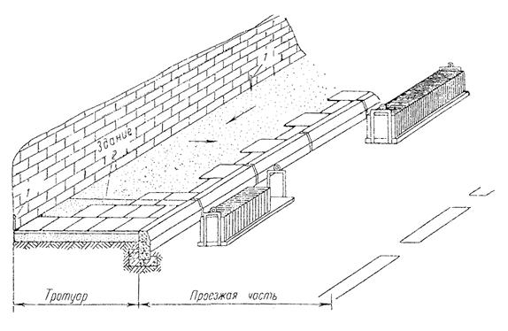
Рис. 6.1. Схема укладки тротуарных плит с перевязкой швов:
1 - штырь; 2 - ходовой шнур.
7.2. Продольную разметку улиц выполняют сплошными, пунктирными двойными линиями. Их размеры зависят от скорости движения. Сплошная одиночная линия разделяет встречные транспортные потоки. На широких магистралях двумя параллельными сплошными линиями выделяют разделительные полосы. Прерывистые линии служат для ориентировки водителей. Иногда линии продольной разметки наносят для разделения полос движения в одном направлении. Такая разметка способствует систематизации движения транспорта и увеличению пропускной способности улицы.
7.3. Поперечная разметка введена для предупреждения водителей о приближении к препятствиям. Важнейшей разметкой этого типа являются стоп-линии.
7.4. Для механизации нанесения линий регулирования уличного движения применяют маркировочные машины отечественного производства (ДЭ-3Б и ДЭ-21М) и ряда зарубежных фирм. За последние годы для маркировки линий регулирования транспорта и пешеходов применяют главным образом горячую пластмассу.
8.1. Контроль за производством работ по строительству дорог в районах массового жилищного строительства является одной из важнейших функций городских организаций, занимающихся эксплуатацией улиц и являющихся заказчиками на их строительство.
8.2. Контроль за работами по строительству подразделяется на следующие категории:
- производственный контроль, осуществляемый непосредственно в процессе строительства (главными инженерами строительных организаций, производителями работ, дорожными мастерами);
- инспекторский контроль качества, осуществляемый представителями заказчика при повседневном техническом надзоре в процессе строительства, промежуточных приемках скрытых работ и комплексно законченных конструктивных элементов сооружений;
- авторский надзор за строительством, осуществляемый сотрудниками проектной организации, составляющей проект.
8.3. Контроль в процессе производства работ заключается в проверке соответствия выполняемых работ проекту, техническим условиям и правилам производства работ, а также соответствия качества применяемых материалов установленным стандартам.
8.4. Все сооружения, предъявляемые к сдаче в эксплуатацию, должны быть выполнены в соответствии с проектом, СНиПом и другими действующими нормативно-техническими документами.
8.5. При приемке водостоков и дренажа в эксплуатацию должны проверять качество уложенных труб на основании; плотность стыков соединений и сопряжении труб с колодцами; прямолинейность линии заложения трассы водостока и дренажа между двумя колодцами.
8.6. При приемке земляного полотна и песчаного подстилающего слоя поперечные и продольные профили проверяют нивелировкой, размеры элементов в плане - стальной лентой, а ровность поверхности - рейкой. Требуемая плотность грунтов земляного полотна и песчаного подстилающего слоя должна быть не менее 0,98 от оптимальной. Отклонение толщины песчаного слоя от проектной допускается в пределах ± 1 см. Коэффициент фильтрации песка должен быть не менее 3 м/сутки.
8.7. При приемке бортов проверяют правильность их установки (устойчивость, продольный уклон), качество камней, их размеры; возвышение бортов над лотком проезжей части, качество заделки швов.
8.8. Щебеночные и гравийные основания проверяют путем проведения лабораторных испытаний вырубок из оснований весом 2 кг по одной на каждые 5000 м2. Уменьшение толщины оснований не должно превышать 10 % от проектной. Уплотнение оснований считается достаточным, когда брошенная под каток щебенка раздавливается.
8.9. При приемке основания из цементного бетона проверяют отсутствие трещин, прочность бетона лабораторными испытаниями вырубок, конструкцию температурных швов и правильность их расположения, правильность установки люков колодцев и водоприемных решеток. Допускаемые отклонения от проекта не должны превышать по толщине плиты ± 10 мм, по ровности - 10 мм при проверке 3-метровой рейкой, по прочности при испытании на изгиб - 5 %, на сжатие - 10 %.
8.10. При приемке мостовых из брусчатки, мозаиковой шашки проверяют следующие показатели: ровность поверхности (просвет под 3-метровой рейкой не должен превышать 5 мм), уклоны поперечного профиля, качество штучных материалов; устойчивость мостовой; заполнение швов с требуемой перевязкой, соблюдение правильного рисунка замощения и сопряжения мостовой с бортами, колодцами и дождеприемными решетками.
8.11. При приемке асфальтобетонных покрытий проверяют:
- соответствие утвержденному проекту конструкции основания подстилающего слоя, дренажных и водоотводных устройств по актам на «скрытые» работы, журналам производства работ и лабораторным данным;
- соответствие уложенной асфальтобетонной смеси требованиям проекта и ГОСТа;
- качество уплотнения покрытия (одна вырубка на 3000 м2 покрытия);
- качество отделки поверхности покрытия;
- толщину покрытия по данным вырубок;
- соответствие продольного и поперечного профилей;
- ровность поверхности покрытия (проверяется через 20 - 30 м);
- правильность установки люков, колодцев и водоприемных решеток.
Допускаемые отклонения от проекта не должны превышать: по ширине покрытия - 10 см; по толщине - 10 %; по поперечному уклону - 5 %; по ровности - 3 - 5 мм (просвет под 3-х метровой рейкой).
8.12. При приемке сборных покрытий дорог качество железобетонных плит проверяют на месте изготовления. К готовому дорожному покрытию предъявляют требования, аналогичные требованиям, предъявляемым к дорожным одеждам из штучного материала. Особое внимание должно быть уделено качеству основания, его уплотнения и созданию плоской поверхности, обеспечивающей сплошное опирание плит на основание.
8.13. Цементобетонные покрытия принимаются к сдаче не раньше чем по истечении 28 дней со времени их устройства и при наличии результатов испытаний. При приемке проверяют:
- соответствие утвержденному проекту конструкции основания, подстилающего слоя, дренажных устройств и водостока - по актам на «скрытые» работы, журналам производства работ и лабораторным данным;
- соответствие уложенной смеси требованиям ГОСТа по данным лабораторных испытаний образцов бетонной смеси в возрасте 28 дней;
- качество ухода за бетоном по данным журналов;
- состояние поверхности (отсутствие раковин, неровностей, наплывов, трещин);
- правильность устройства швов расширения и сжатия;
- правильность установки люков, колодцев, решеток.
Допуски отклонения от проекта: ширина покрытия - 5 см; толщина плиты - 10 %; по поперечному уклону - 5 %, по ровности при проверке 3-х метровой рейкой - 3 мм, по прочности при испытании на изгиб - 5 %, на сжатие - 10 %.
8.14. При приемке тротуаров проверяют соответствие проекту конструкции основания, подстилающего слоя по актам на «скрытые» работы, правильное сопряжение с бортами, колодцами, ограждениями газонов, деревьями, толщину и ширину тротуаров. Допускается отклонение по толщине покрытия не более ± 0,5 см, по ровности - просвет под 2-х метровой рейкой должен быть не более 3 мм.
9.1. При строительстве дорог в районах массовой жилой застройки необходимо строго соблюдать технические правила производства работ в соответствии с требованиями норм и правил техники безопасности СНиП III-4-80.
9.2. Рабочие, занятые на работах с вредными условиями труда, должны проходить предварительный и последующий периодический медицинский осмотр в сроки, установленные Минздравом России.
9.3. При доставке смеси автомобилями-самосвалами необходимо выполнять следующие требования техники безопасности:
- не подходить к автосамосвалу до полной его остановки, а в момент его разгрузки не стоять у бункера укладчика и не находиться под поднятым кузовом;
- поднятый кузов следует очистить совковой лопатой или скребком с длинной рукояткой. Рабочим, проводящим очистку, запрещается стоять в кузове, на колесах и на бортах самосвала;
- при движении автосамосвала рабочие должны находиться в безопасной зоне.
9.4. При доставке литой смеси автобетоносмесителями необходимо соблюдать правила:
- при движении по обочине все рабочие должны находиться на противоположной обочине;
- при движении автобетоносмесителей (особенно задним ходом) рабочий, находящийся в безопасной зоне, должен подавать шоферу сигналы.
9.5. Суперпластификаторы не выделяют при хранении вредных паров и газов, малотоксичны, водные растворы их пожаробезопасны.
Для защиты от попадания суперпластификаторов на кожные покровы необходимо применять индивидуальные средства (защитные очки, сапоги, резиновые перчатки).
9.6. При установке однометровых бортовых камней вручную перенос бортовых камней разрешается только с использованием специальных клещей. Перемещение бортового камня волоком запрещено.
9.7. Запрещается курить и пользоваться открытым огнем:
- при уходе за тощим бетоном и цементобетоном, при работе с пленкообразующими материалами, содержащими огнеопасные вещества;
- при обработке цементобетонного основания жидким битумом или битумной эмульсией перед укладкой асфальтобетонной смеси;
- в местах хранения, приготовления и разжижения битума.
9.8. При розливе битумных пленкообразующих материалов запрещается находиться на расстоянии ближе 10 м от распределительных шлангов.
9.9. Рабочие должны быть обеспечены специальной одеждой и исправным инструментом в соответствии с действующими нормами.
9.10. Ответственность за неисправность машин и механизмов несет начальник участка управления механизации, а за рабочих - начальник участка строительного управления.
1. Расчет дорожной одежды и ее отдельных конструктивных слоев должен производиться по методу предельных состояний на совместное воздействие силовых и климатических факторов - автомобильных нагрузок и изменений температуры в суточном режиме, учитывая вероятностный характер их сочетания в различных количественных соотношениях коэффициентов перегрузок п1 и сочетаний пс.
2. Расчет дорожной одежды по методу предельных состояний должен обеспечивать ее сохранность от:
- хрупкого и вязкого разрушения при однократном приложении максимальных нагрузок (расчет на прочность);
- усталостного разрушения под воздействием многократных повторяющихся нагрузок (расчет на выносливость);
- потери устойчивости формы вследствие морозного пучения земляного полотна.
3. Расчет дорожных одежд проводят в следующей последовательности:
а) расчет одежды по морозоустойчивости, т. е. определение общей толщины дорожной одежды, при которой ее морозное пучение находится в заданных пределах [10];
б) расчет толщины песчаного подстилающего слоя, обеспечивающего осушение одежды, верхнего слоя земляного полотна и высокие прочностные показатели грунтового основания в весенне-осенний период [10];
в) расчет конструктивных слоев одежды по прочности и выносливости, обеспечивающей соответствие возникающих усилий (растягивающих напряжений в связных слоях одежды и сдвигающих - в дискретных) расчетным сопротивлениям материалов соответствующих слоев.
4. Сочетание нагрузок, коэффициенты сочетаний пс, а также расчетное положение автомобильной нагрузки следует принимать по табл. 1.
|
Вид предельного состояния |
Автомобильная нагрузка |
Температурные воздействия в суточном режиме |
|
|
на полосе наката в центре плиты |
на середине продольного края плиты |
||
|
коэффициент сочетаний пс |
|||
|
Прочность |
0,9*) |
0,9 |
0,9 |
|
Выносливость |
0,9 |
- |
0,9 |
*) При расчете однослойного основания из цементобетона на период строительства дорожной одежды.
5. Расчетной зоной при расчете на прочность и выносливость является подошва (нижняя грань) конструктивного слоя в месте приложения автомобильной нагрузки, где возникают растягивающие усилия от совместного действия температуры и нагрузки.
6. Расчет на прочность жестких слоев дорожной одежды проводят исходя из предпосылки однократного воздействия расчетной автомобильной нагрузки в сочетании с температурными напряжениями. Критерием прочности является выражение:
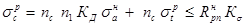
где: sр - суммарные расчетные напряжения;
sн - нормативные напряжения от автомобильной нагрузки;
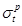
7. Расчет на выносливость жестких слоев одежды проводят исходя из следующих предпосылок:
- накопления усталостных деструктивных явлений в материале при многократном комплексном воздействии нормативных нагрузок;
- роста прочности бетона во времени, т. е. наличия структурообразующего процесса;
- возможности однократного, воздействия на одежду в любой момент времени расчетной автомобильной нагрузки в сочетании с температурными напряжениями.
Критерием выносливости является выражение:
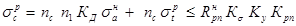
где Крп - коэффициент роста прочности бетона (п. 2.15);
Ку - коэффициент усталости материала (п. 2.15), определенный от многократного воздействия нормативных нагрузок.
8. Проверку прочности дискретных слоев основания сдвигающим усилием следует проводить согласно ВСН 197-83 (24). Расчетным случаем является проезд построечного транспорта по нижнему слою основания из цементобетона, цементогрунта или щебня.
9. Учет несущей способности асфальтобетонного покрытия при расчете дорожной одежды по прочности и выносливости проводят по методике, изложенной в инструкции [19].
10. Расчет дорожной одежды и ее элементов следует проводить для всех стадий строительства и эксплуатации.
Основными расчетными случаями являются:
- работа одежды на 1-й стадии эксплуатации на воздействие построечного транспорта в период застройки района;
- работа одежды на 2-й стадии на воздействие городского транспорта.
Кроме этого, в соответствии с принятой организацией строительства улицы, следует проводить проверочные расчеты прочности всех слоев на единичное воздействие транспорта в период строительства дорожной одежды.
Наряду с широко применяемыми приближенными методами определения в плитах величин расчетных усилий, которые сводятся в основном к определению изгибающих моментов под грузом, приложенным в центре или на краю плиты, как показали проведенные в НИИМосстрое исследования, хорошие результаты дает расчет, основанный на применении метода конечных разностей и винклеровского упругого основания с использованием ЭВМ*).
Данный метод позволяет рассчитывать плиты любой конфигурации жесткости (в том числе с учетом трещинообразования) и размеров на упругом основании с одним коэффициентом постели от любых произвольно приложенных одиночных или комбинированных нагрузок с учетом кручения и соблюдением всех граничных условий.
Методика такого расчета реализована для ЭВМ на языке «Фортран» по следующей блок-схеме.
*) Городецкий Л. В, Расчет бетонных конструкций городских улиц и дорог. -Науч. тр. /НИИМосстрой Главмосстроя, 1965. Совершенствование технологии строительства городских дорог.
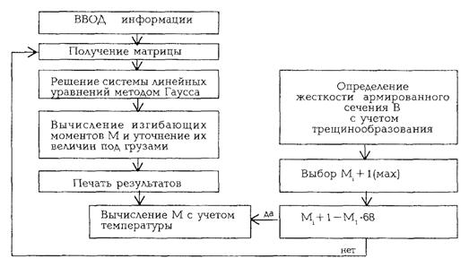
Таблица 1
Составы тощих (укатываемых) и пластичных бетонных смесей
|
№ состава |
Вид смесей |
Марка бетона, М |
Жесткость смеси, сек. осадка конуса, см |
Расход материала на 1 м3 бетонной смеси, кг |
|||
|
цемент М400 |
песок |
щебень, вид |
вода |
||||
|
1 |
тощие (укатываемые) |
75 |
90 - 120 |
70 - 80 |
680 - 650 |
1470 - 1440 известняк |
105 - 115 |
|
2 |
- » - |
100 |
90 - 120 |
90 - 100 |
650 - 630 |
1440 - 1410 известняк |
110 - 125 |
|
3 |
пластичные |
200 |
5 - 6 |
350 |
590 |
1260 известняк |
170 |
|
4 |
- » - |
300 |
5 - 6 |
390 |
560 |
1290 гранит |
165 |
Таблица 2
Составы литых смесей с суперпластификаторами (ОК = 16 - 18 см)
|
№ состава |
Вид бетона (м) |
Расход материала на 1 м3 бетонной смеси, кг |
Вид добавки ПАВ и ее расход в % от массы цемента (кг/м3 смеси) |
|||
|
цемент М400 |
песок |
щебень, вид |
вода |
|||
|
1 |
200 |
290 |
640 |
1220 известняк |
175 |
С-3; 0,7 (2,0) |
|
2 |
200 |
НФ; 0,7 (2,0) |
||||
|
3 |
200 |
С-3 + СДВ; 0,4 + 0,5 + 0,15 (1,16 + 1,45 + 0,44) |
||||
|
4 |
300 |
350 |
630 |
1260 гранит |
160 |
С-3; 0,7 (2,45) |
|
5 |
300 |
НФ; 0,7 (2,45) |
||||
|
6 |
300 |
С-3 + СДБ; 0,4 + 0,5 + 0,15 (1,4+1,75 + 0,525) |
||||
|
7 |
350 |
430 |
680 |
1100 гранит |
180 |
С-3; 0,7 (3,01) |
|
8 |
350 |
НФ;0,7 (3,01) |
||||
|
9 |
350 |
С-3 + СДБ; 0,4 + 0,5 + 0,15 (1,72 + 2,15 + 0,65) |
||||
|
10 |
400 |
500 |
750 |
1000 гранит |
195 |
С-3; 0,7 (3,5) |
|
11 |
400 |
НФ; 0,7 (3,5) |
||||
|
12 |
400 |
С-3 + СДБ; 0,4 + 0,5 + 0,15 (2 + 2,5 + 0,75) |
||||
СОДЕРЖАНИЕ